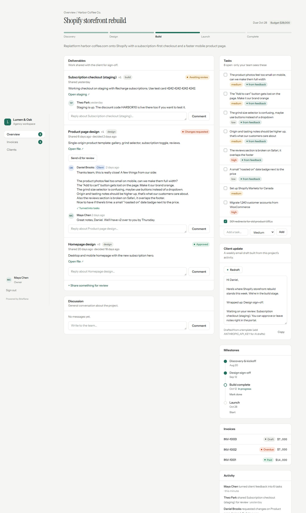
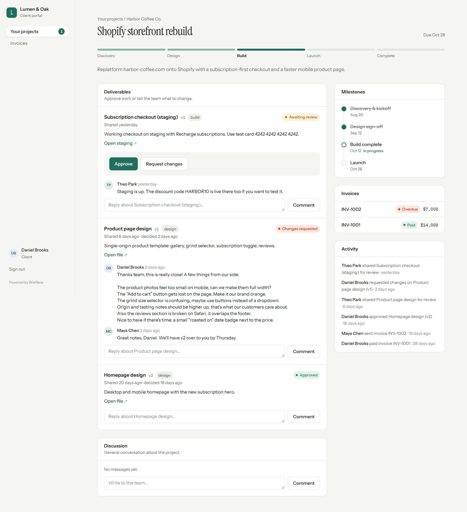

Case study · SaaS · Full-stack
One link for
every approval.
Brieflane is a white-label client portal for design and development agencies. Clients review work, approve or request changes, and pay invoices in one place. The agency receives that feedback as prioritised tasks instead of a long email thread.

The problem
Agencies lose hours every week to scattered approvals: Figma links in email, “final_v3” PDFs, and payment reminders sent by hand. Nobody can say for sure who approved what, or when.
Brieflane gives each client one link where the work waits for them, and gives the agency an audit trail of every decision.


What it does
Projects & deliverables
- Stage tracker, milestones and budget per project
- Share designs, staging links and documents
- Approve or request changes, with every version recorded
AI where it saves time
- One click turns a rambling client comment into prioritised tasks (Claude)
- AI-drafted weekly client update from real project activity
- Offline fallback parser, so it works with no API key
Invoices & payments
- Line items, drafts, sending and overdue tracking
- Clients pay through Stripe Checkout
- Clearly labelled demo payments without Stripe keys
White-label
- The agency’s brand colour runs through the whole portal
- Clients see the agency, never Brieflane
- Clients never see internal tasks or activity
Engineering decisions
- Authorisation lives in the data layer, not in pages. Every query takes the viewer and scopes itself, so a client who guesses another client’s project ID simply gets nothing back.
- No approving on someone else’s behalf. Clients can’t act for the agency and staff can’t act for the client. Double submissions are blocked with a conditional update on the previous status.
- Money is integer cents end to end. Totals are computed in SQL from line items, never stored.
- Idempotent Stripe webhooks. Marking an invoice paid only flips “sent → paid”, so retried webhooks are harmless.
- Accessible by default. Semantic landmarks, visible focus, reduced-motion support and outlines that survive Windows High Contrast mode.
Architecture
Tested with Vitest: pure permission rules and state transitions as unit tests, plus access tests that prove one client can never read another client’s data.

Stack
Next case study
Axelink Web Auditor